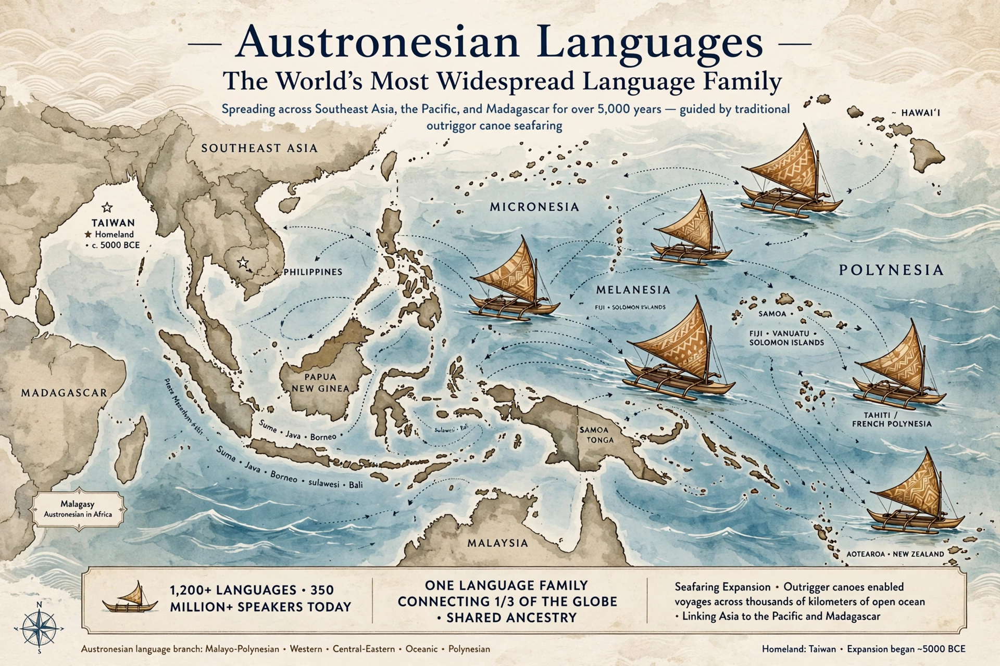

The Austronesian languages form one of the world's largest language families, widely dispersed across Maritime Southeast Asia, Madagascar, the Pacific Islands, Taiwan, and parts of mainland Asia. They include Malay/Indonesian, Javanese, Tagalog, Cebuano, Māori, Hawaiian, Samoan, Tongan, and Malagasy, with roughly 1,200 languages in total.

| Austronesian | |
|---|---|
| Region | Southeast Asia, Oceania, Madagascar |
| Speakers | c. 300+ million |
| Languages | c. 1,257 |
| Proto-language | Proto-Austronesian |
Most linguists place the Proto-Austronesian homeland in Taiwan, where the deepest diversity — nine of ten primary subgroups in Robert Blust's classification — is found among Formosan languages. From Taiwan, speakers migrated to the Philippines around 4,000 years ago, then through Indonesia, reaching Madagascar in the west and, via the Lapita culture and Polynesian voyaging, as far east as Rapa Nui (Easter Island), Hawaii, and New Zealand.
Typical features include verb-initial word order in many Philippine and Formosan languages, Austronesian alignment (focus system), reduplication, and relatively simple phoneme inventories — Hawaiian has among the smallest. Many languages have inclusive/exclusive distinctions in first-person plural pronouns.
Major branches include Malayo-Polynesian, which contains Western Malayo-Polynesian languages (Malay, Javanese, Tagalog), Central-Eastern Malayo-Polynesian, and Oceanic languages including Polynesian. Malagasy, spoken in Madagascar, is closely related to languages of Borneo, reflecting seaborne migration across the Indian Ocean.
Malay · Tagalog · Māori · Proto-Austronesian
Recreated from memory.